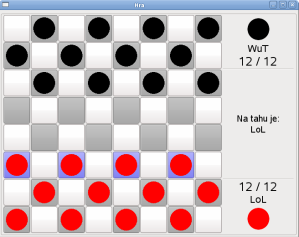

|

|
- Lokální hra představuje možnost, jak hrát dámu na jednom počítači proti jinému lidskému protivníkovi.
- Oba hráči sdílí stejné ovládací prvky (myš) a po tazích se střídají.
- Chování hrací desky:
- Na hrací ploše jsou černé a červené kameny (bílé kameny byly opticky zaměněny za červené kvůli transparentnosti).
- Deska znázorňuje automaticky, který hráč je právě na tahu.
- Deska také sama znázorňuje táhnoucímu hráči, kterými kameny je možné, nebo (v případě možnosti skočit soupeřův kámen/y) nutné táhnout.
- Zvolíte levým tlačítkem myši, kterým kamenem budete táhnout (pozn. poté co vyberete a označíte kámen, není možné volbu změnit), pole pod ním se podbarví zeleně, tak, jak je to znázorněno na obrázku níže.
- Poté zvolíte levým tlačítkem cíl vašeho tahu. (pozn. v případě několikanásobného skoku označujte jednotlivé dílčí skoky)
- Pokud skáčete soupeřovu figuru a máte možnost jich skočit více než jednu, váš tah pokračuje, dokud je neskočíte všechny. Vámi přeskočené figury se mezitím podbarvují červeně.
|